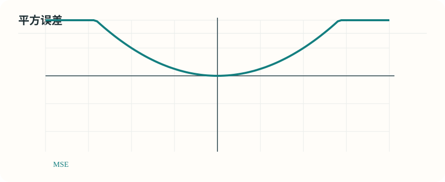
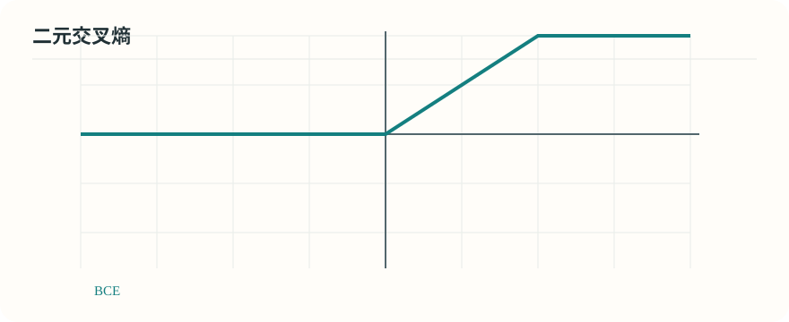
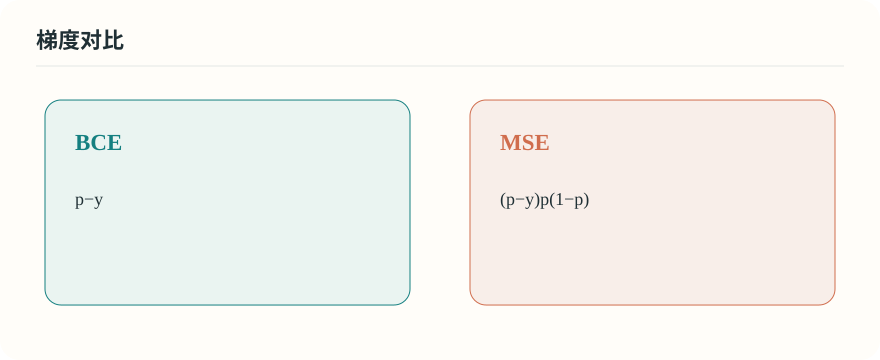
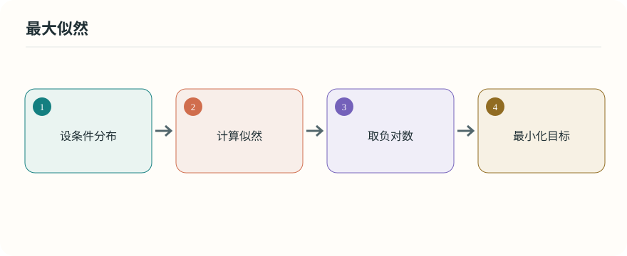
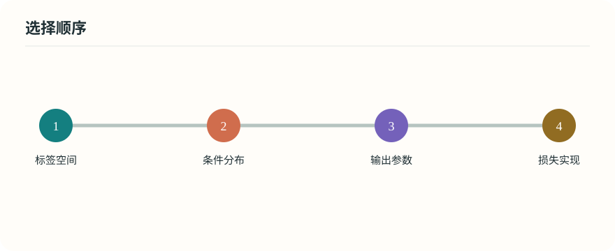

深度前馈网络 · MODULE 03
损失函数：模型究竟在优化什么
从误差度量走到概率模型，理解 MSE、交叉熵与正则化。
损失函数表达模型如何看待预测错误，并与输出层描述的概率分布紧密相连。
损失函数表达模型如何看待预测错误，并与输出层描述的概率分布紧密相连。
1. 样本损失、数据目标、正则项
单样本损失衡量一次预测；对样本聚合得到经验风险；加入正则项才是完整优化目标。教材对 loss、cost、objective 的命名可能不同，要看清层级。
2. 回归：MSE、MAE、Huber
MSE 对大误差施加平方惩罚；MAE 的增长是线性的，对极端残差更稳健；Huber 在小误差处平方、大误差处线性，是一种折中。

3. 二分类：二元交叉熵
当标签是 0/1、模型输出 Bernoulli 概率 p 时，负对数似然就是二元交叉熵。logit 应优先交给 BCEWithLogitsLoss，避免手动 sigmoid 后再算对数造成数值问题。

4. 最大似然连接概率假设
先设定条件分布 p(y|x;θ)，再最大化训练数据似然；取负对数得到可最小化目标。固定方差 Gaussian 回归对应 MSE（差常数与比例因子），Bernoulli 对应 BCE。

5. MSE 与 BCE 的梯度不同
对 sigmoid 概率 p，BCE 对 logit 的梯度为 p−y；MSE 还乘以 p(1−p)。因此饱和区 MSE 梯度可能更小，但不能简单说 MSE 永远不能用于分类。

6. 正则化改变完整目标
L2 正则项限制参数规模，不是标签误差。正则强度过小可能约束不足，过大则可能欠拟合；应通过验证集选择。
7. 从标签与分布选择损失
先确认连续值、二值、互斥多类还是多标签；再确定输出代表哪个分布参数。MSE/BCE/交叉熵是常见配对，不是没有例外的口诀。
8. 最后核对实现细节
检查 logits 与 probabilities、标签编码、张量 shape、类别维、reduction 和数值稳定性。训练损失下降也不自动意味着泛化更好。

交互实验
假设真实标签 y=1，比较 BCE 与 MSE。
交互用于核对公式与数值关系；不是完整训练基准。
可运行示例
import torch
import torch.nn.functional as F
logits=torch.tensor([0.7,-1.2,2.0])
target=torch.tensor([1.,0.,1.])
print(F.binary_cross_entropy_with_logits(logits,target))参考资料
教材结论、论文结论与本页推导分别标注；图示为独立绘制。